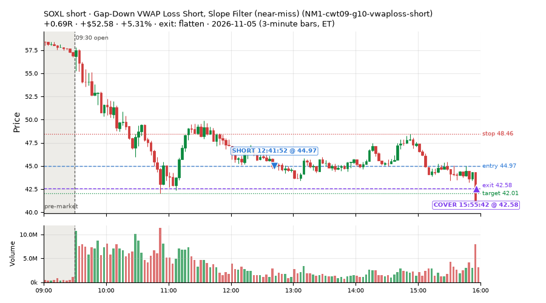
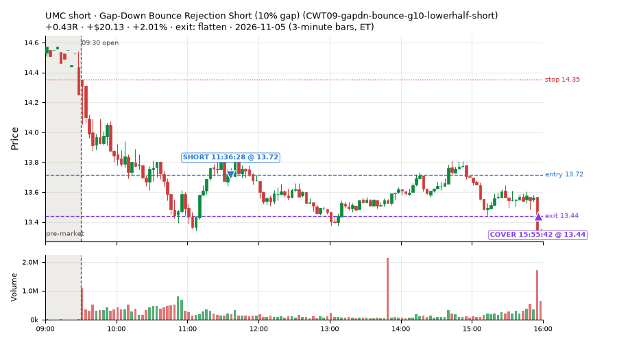
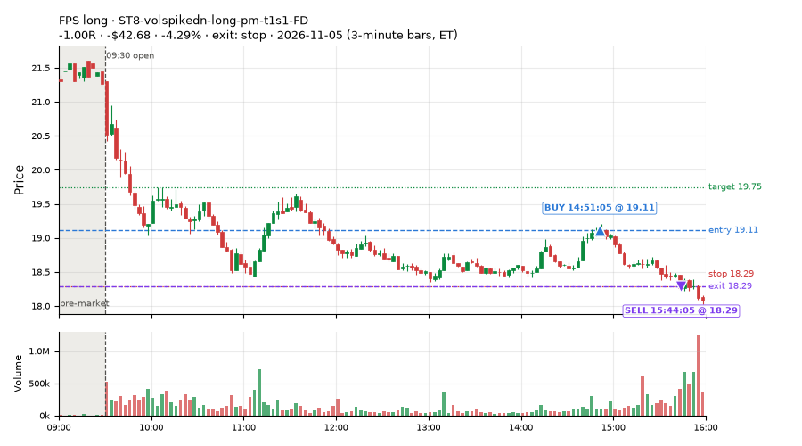
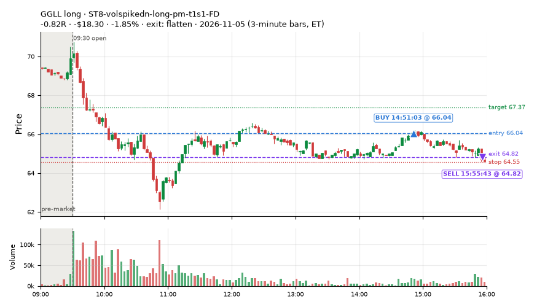
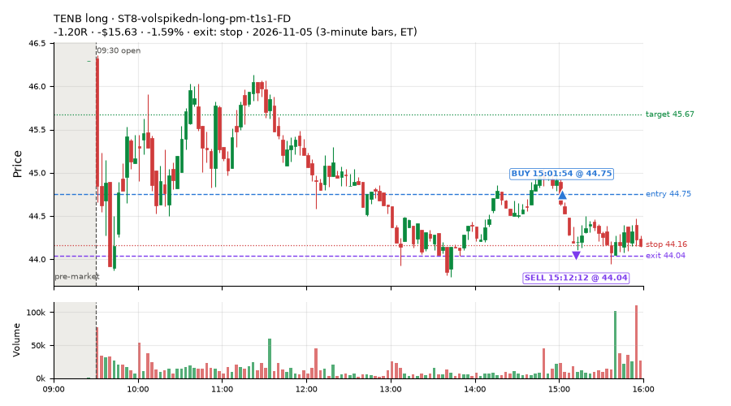
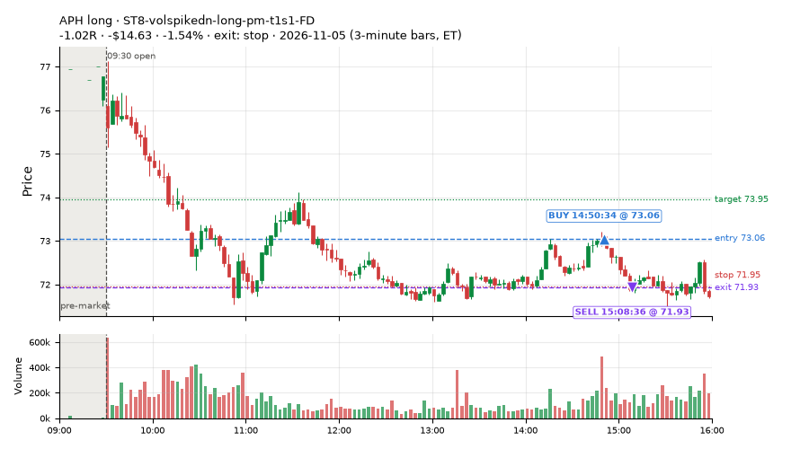
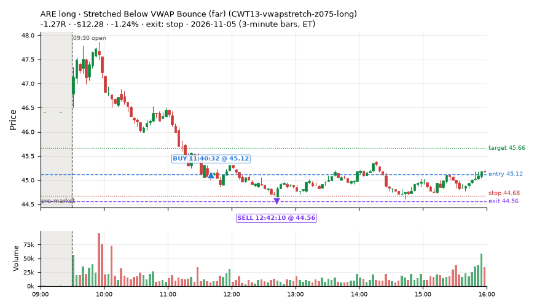

36 trades · win rate 33% · P/L $54.92
PROBATION: no live setup has passed both locked test periods. 10 owner-directed setups added 2026-10-08 (MarcoFlow top 5 + 5 new), untested live. RW6G1 (RW6 + VWAP band guard) added 2026-10-09, probation.

| Symbol | Setup | Side | In | Out | Entry | Exit | Exit reason | % gained | P/L |
|---|---|---|---|---|---|---|---|---|---|
| SOXL | Gap-Down Bounce Rejection Short (10% gap) (CWT09-gapdn-bounce-g10-lowerhalf-short) | short | 11:36 | 15:55 | 48.84 | 42.58 | flatten | +12.82% | $125.20 |
| SOXL | Gap-Down VWAP Loss Short, Slope Filter (near-miss) (NM1-cwt09-g10-vwaploss-short) | short | 12:41 | 15:55 | 44.97 | 42.58 | flatten | +5.31% | $52.58 |
| UMC | Gap-Down Bounce Rejection Short (10% gap) (CWT09-gapdn-bounce-g10-lowerhalf-short) | short | 11:36 | 15:55 | 13.72 | 13.44 | flatten | +2.01% | $20.13 |
| Symbol | Setup | Side | In | Out | Entry | Exit | Exit reason | % lost | P/L |
|---|---|---|---|---|---|---|---|---|---|
| FPS | ST8-volspikedn-long-pm-t1s1-FD | long | 14:51 | 15:44 | 19.11 | 18.29 | stop | -4.29% | $-42.68 |
| GGLL | ST8-volspikedn-long-pm-t1s1-FD | long | 14:51 | 15:55 | 66.04 | 64.82 | flatten | -1.85% | $-18.30 |
| TENB | ST8-volspikedn-long-pm-t1s1-FD | long | 15:01 | 15:12 | 44.75 | 44.04 | stop | -1.59% | $-15.63 |
| APH | ST8-volspikedn-long-pm-t1s1-FD | long | 14:50 | 15:08 | 73.06 | 71.93 | stop | -1.54% | $-14.63 |
| ARE | CWT13-vwapstretch-z075-long | long | 11:40 | 12:42 | 45.12 | 44.56 | stop | -1.24% | $-12.28 |







Signal to fill: median 2s, 90th percentile 4s (36 trades). Bars close each minute; the order follows the bar close.
Best excursion (MFE): median 0.41R; worst (MAE) median 1.01R. 42% of trades never got +0.25R in our favour; 1 reached +1R and still closed at or below 0.
| Symbol | Setup | Best R | Worst R | Closed R |
|---|---|---|---|---|
| EMXC | CWT13-vwapstretch-z075-long | +1.13 | -1.16 | -1.00 |
| JPM | CWT13-vwapstretch-z075-long | +0.41 | -1.64 | -1.34 |
| ACGL | CWT13-vwapstretch-z075-long | +0.59 | -1.07 | -1.13 |
| ARE | CWT13-vwapstretch-z075-long | +0.44 | -1.09 | -1.27 |
| ORLY | CWT13-vwapstretch-z075-long | +0.61 | -1.00 | -1.06 |
| Entry time | Trades | Win | Avg R | P/L |
|---|---|---|---|---|
| 09:50-10:30 | 1 | 0% | -1.34 | $-3.26 |
| 10:30-11:30 | 3 | 33% | -0.23 | $-4.50 |
| 11:30-13:00 | 19 | 42% | -0.28 | $173.08 |
| 13:00-14:00 | 3 | 33% | -0.50 | $-7.53 |
| 14:00-16:00 | 10 | 20% | -0.58 | $-102.87 |
| Setup | Trades | Win | Avg R | Adj R (net of SPY) | Avg R ex-market (all sessions) | P/L |
|---|---|---|---|---|---|---|
| Panic Flush Reversal (5x volume) (CWT05-flush-m05-v5-long) | 1.0 | 0% | -1.09 | +0.16 | – | $-5.44 |
| Gap-Down Bounce Rejection Short (10% gap) (CWT09-gapdn-bounce-g10-lowerhalf-short) | 2.0 | 100% | +0.57 | +0.37 | – | $145.33 |
| Stretched Below VWAP Bounce (far) (CWT13-vwapstretch-z075-long) | 23.0 | 30% | -0.44 | +0.01 | -0.10 (beta +1.09, n 23) | $-44.95 |
| Gap-Down VWAP Loss Short, Slope Filter (near-miss) (NM1-cwt09-g10-vwaploss-short) | 1.0 | 100% | +0.69 | +0.64 | – | $52.58 |
| RSI Collapse Dip Buy, Nasdaq-below-VWAP only (all day) (ST7Q-rsi50dn-qqqbelowvwap-long-t1s1-FD) | 1.0 | 100% | +0.59 | +0.52 | – | $11.33 |
| ST8-volspikedn-long-pm-t1s1-FD | 8.0 | 12% | -0.73 | -0.32 | -0.47 (beta +0.42, n 8) | $-103.93 |
Market direction (SPY, beta 1) accounted for $-86.23 of today's $54.92; the rest ($141.15) came from the setups themselves. Avg R net of SPY: -0.01 (incl. a hedge leg's cost; report only).
21 setups live today. Today: 203 signals, 36 taken, 0 lost because another setup held the symbol (0%). Since 2026-11-05 (1 sessions): 203 signals, 36 taken, 0 lost to other setups (0%). Peak open positions today 19 of 200 slots. Earnings blackout removed 1502 symbols before scanning.
Simulated playing time (not live): 167 what-if trades of signals not taken, avg -0.04R, 54% winners; of them 0 lost to another setup.
| Prio | Setup | Today sig / taken | Sessions | Signals / taken / trades | Taken/day | Expected/day | Lost to other setups | Lost to (setup n) | Top skip reasons | SIMULATED: not-taken n / avg R / win | Verdict |
|---|---|---|---|---|---|---|---|---|---|---|---|
| 1 | Index Dip Bounce 2 3x S&P IDX2-spy075-0945-3x-trail | 0 / 0 | 1 | 0 / 0 / 0 | 0.00 | – | 0 | – | – | 0 / – | quiet - wait no signals in 1 session(s); too early to tell |
| 2 | Index Dip Bounce 1 TQQQ (hold) IDX1-qqq100-0955-TQQQ-hold | 0 / 0 | 1 | 0 / 0 / 0 | 0.00 | – | 0 | – | – | 0 / – | quiet - wait no signals in 1 session(s); too early to tell |
| 3 | Index Dip Bounce 5 3x S&P IDX5-spy050-0945-3x-trail | 0 / 0 | 1 | 0 / 0 / 0 | 0.00 | – | 0 | – | – | 0 / – | quiet - wait no signals in 1 session(s); too early to tell |
| 4 | * Oversold EMA Cross-Down with Breadth Turning Up (near-miss) LD4-st4-breadthup-t1s05-long | 0 / 0 | 1 | 0 / 0 / 0 | 0.00 | – | 0 | – | – | 0 / – | quiet - wait no signals in 1 session(s); too early to tell |
| 5 | * SPY Dip of 0.30%, Breadth Turn (SPXL, trailing) (near-miss) LD8-spy-dip030-breadthturn-spxl-holdtr-long | 0 / 0 | 1 | 0 / 0 / 0 | 0.00 | – | 0 | – | – | 0 / – | quiet - wait no signals in 1 session(s); too early to tell |
| 6 | * Oversold Slope Turn after an SPY Dip-Turn (near-miss) LD3-st2-idxturn-t05s1-long | 0 / 0 | 1 | 0 / 0 / 0 | 0.00 | – | 0 | – | – | 0 / – | quiet - wait no signals in 1 session(s); too early to tell |
| 7 | * Oversold Pop with Breadth Turning Up (near-miss) LD1-ns1-breadthup-t05s1-long | 0 / 0 | 1 | 0 / 0 / 0 | 0.00 | – | 0 | – | – | 0 / – | quiet - wait no signals in 1 session(s); too early to tell |
| 8 | Big Gainer Fade with VWAP Band Guard RW6G1-ns2-up3-vwap2sd-short | 0 / 0 | 1 | 0 / 0 / 0 | 0.00 | 0.40 | 0 | – | – | 0 / – | quiet - wait no signals yet; only ~0.4 expected so far |
| 9 | Gap-Down VWAP Loss Short, Slope Filter (near-miss) NM1-cwt09-g10-vwaploss-short | 35 / 1 | 1 | 35 / 1 / 1 | 1.00 | – | 0 | – | not shortable / shorts off 31, spread / quote / size 2, other 1 | 34 / -0.12R / 56% | slow 5.0 entries/week; ~12 weeks to 60 trades |
| 10 | Backside VWAP-Test Short (big runner) CWT04-backside-vwaptest-a25-short | 1 / 0 | 1 | 1 / 0 / 0 | 0.00 | – | 0 | – | not shortable / shorts off 1 | 1 / -1.03R / 0% | slow no entries yet |
| 11 | Monday Weak-RS NS3 Short (near-miss) NM-RWN5-ns3-mon-weakrs-short | 0 / 0 | 1 | 0 / 0 / 0 | 0.00 | – | 0 | – | – | 0 / – | quiet - wait no signals in 1 session(s); too early to tell |
| 12 | Quiet Downtrend Bounce Short (near-miss) NM-AMS-N1-quiet-morning-short | 0 / 0 | 1 | 0 / 0 / 0 | 0.00 | – | 0 | – | – | 0 / – | quiet - wait no signals in 1 session(s); too early to tell |
| 13 | Early NS3 Short While SPY Up (near-miss) NM-RWN3-ns3-spyup-early-short | 0 / 0 | 1 | 0 / 0 / 0 | 0.00 | – | 0 | – | – | 0 / – | quiet - wait no signals in 1 session(s); too early to tell |
| 14 | ST8-volspikedn-long-pm-t1s1-FD ST8-volspikedn-long-pm-t1s1-FD | 12 / 8 | 1 | 12 / 8 / 8 | 8.00 | 1.05 | 0 | – | spread / quote / size 2, other 2 | 4 / -0.16R / 50% | ok 40.0 entries/week |
| 15 | RSI Collapse Dip Buy, Nasdaq-below-VWAP only (all day) ST7Q-rsi50dn-qqqbelowvwap-long-t1s1-FD | 4 / 1 | 1 | 4 / 1 / 1 | 1.00 | – | 0 | – | spread / quote / size 2, other 1 | 3 / -0.40R / 33% | slow 5.0 entries/week; ~12 weeks to 60 trades |
| 16 | Early Sellers, Mid-High RSI MF2-open-rsimidhi-flowsell | 0 / 0 | 1 | 0 / 0 / 0 | 0.00 | 1.30 | 0 | – | – | 0 / – | quiet - wait no signals yet; only ~1.3 expected so far |
| 17 | Gap-Down Bounce Rejection Short (10% gap) CWT09-gapdn-bounce-g10-lowerhalf-short | 29 / 2 | 1 | 29 / 2 / 2 | 2.00 | – | 0 | – | not shortable / shorts off 26, spread / quote / size 1 | 27 / +0.34R / 93% | slow 10.0 entries/week; ~6 weeks to 60 trades |
| 18 | NS2 Up-3 Short, QQQ Up, Slope Down (near-miss) NM-RWR4-ns2-up3-qqqup-slopedn-short | 0 / 0 | 1 | 0 / 0 / 0 | 0.00 | – | 0 | – | – | 0 / – | quiet - wait no signals in 1 session(s); too early to tell |
| 19 | Backside Lower-High Short CWT04-backside-lh-a15-short | 4 / 0 | 1 | 4 / 0 / 0 | 0.00 | – | 0 | – | not shortable / shorts off 4 | 4 / +0.55R / 50% | slow no entries yet |
| 20 | Panic Flush Reversal (5x volume) CWT05-flush-m05-v5-long | 3 / 1 | 1 | 3 / 1 / 1 | 1.00 | – | 0 | – | spread / quote / size 2 | 2 / +0.51R / 100% | slow 5.0 entries/week; ~12 weeks to 60 trades |
| 21 | Stretched Below VWAP Bounce (far) CWT13-vwapstretch-z075-long | 115 / 23 | 1 | 115 / 23 / 23 | 23.00 | – | 0 | – | per-setup cap 67, spread / quote / size 15, other 10 | 92 / -0.13R / 42% | ok 115.0 entries/week |
Every trade is attached as a CSV you can open and edit in Excel or Google Sheets. Live page: https://misiti15.github.io/MCF/live/